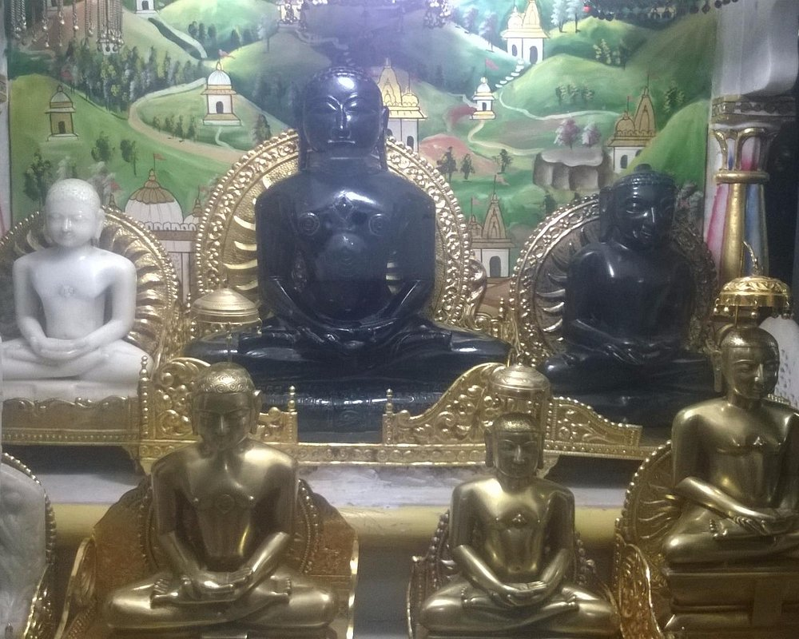

Augharnath Temple
Augharnath Temple, also known as Kali Paltan Mandir,is a historic site linked to the 1857 revolt, where soldiers first planned the uprising against British rule.
Hastinapur Wildlife
Hastinapur Wildlife Sanctuary is a protected area in Uttar Pradesh, known for barasingha, leopards, and rich birdlife along the Ganges.
Shopprix Mall
Shopprix Mall in Meerut is a popular shopping and entertainment hub featuring major brands, a food court, Wave cinemas, and family-friendly facilities.
Gandhi Bagh
a tranquil, family-friendly green oasis — ideal for morning/evening walks, picnics, children’s fun, and a slice of colonial-era charm in the heart of Meerut.

jain maindir
Meerut’s Jain heritage centers around the architecturally rich Digambar and Shwetambar temples, steeped in centuries-old history, sacred idols, and vibrant community traditions.
Fantasy world
A magical realm, filled with ancient temples, enchanted forests, sacred beasts, and floating bazaars.